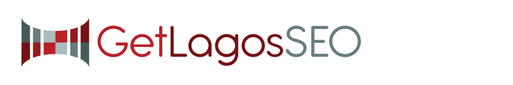
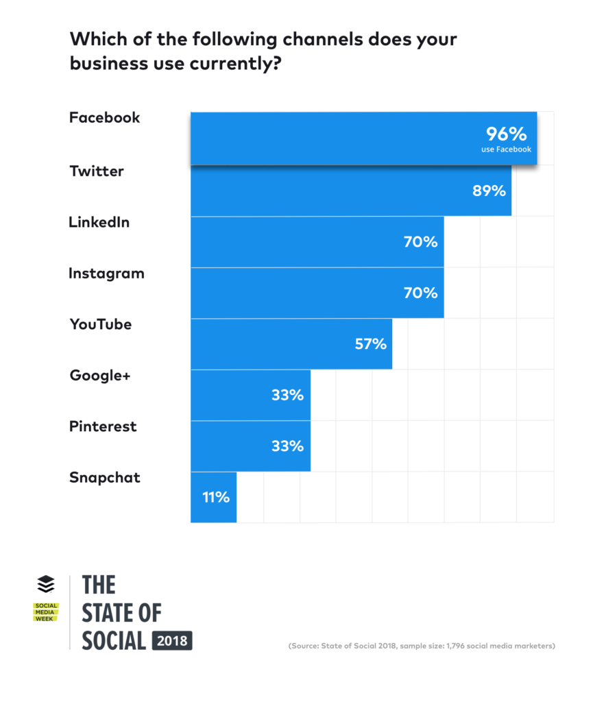

Let’s Talk SEO and BE FOUND
Writer – Michelle Lagos CEO
SEO – Search Engine Optimization NEEDS to happen, so your website can be found on the internet, and all of your marketing, branding, sales, design, and website work receives the ROI that you’re seeking.
This can only rank above your competition if you understand that your messaging, content, website functionality, website mobil optimization, marketing campaigns are ALL WORKING TOGETHER, and ALL need to be addressed and managed to successfully bring up your SEO, as your ratings come down quite a bit if you don’t. Read more below and get some details.
The modern SEO techniques focus not only on the search engines but also the overall user experience. Remember, Google keeps updating its algorithms, and the tactics that you used 3 years ago will not be effective today.
Let’s check out some of THE TOP LIST priorities that should be addressed.
1. Optimize your site to be mobile-friendly
If you would like to experience the best SEO outcomes, then you must ensure that your site is mobile-friendly. Why? When Google updated its algorithm in 2016, mobile-first indexing became a seo ranking factor.
Therefore, you have to optimize your site to mobile friendly to get higher SEO rankings, and slow website loading times do bring down your ratings as well.
2. Focus on local SEO optimization – Be Found
It’s important your business address can also come up in the ‘near me’ searches for those viewers that are looking for products/services/locations that are near their geographical location. By the way can they also quickly call you? Email? Ask you a question? Yes, make that happen!
If yours is purely an online business, you also have to optimize your site for local searches.
3. Improve the user- experience – UX
If you want your site to get more traffic and also obtain higher search engine rankings, you have to ensure that it’s user-friendly. When your site provides visitors with the experience they were hoping for or better; the visitors tend to spend more time on your site, which could improve your search engine rankings. Google identifies the time a user has spent on your site, so post relevant and high-quality content, high-quality visuals that are properly tagged with high-ranking content, and make sure your content is stylized in a way that gets Googles attention, yet isn’t so wordy that the viewers feel like reading a mini-novel. Concise information and visually WOWS is the GOAL!
4. Maximize on social media
If there is an SEO technique that could help to boost your rankings, it is social media marketing. If you could take a look at the trends and statistics of social media usage over the last decade, you will notice that the number of users keeps increasing every year.

What does this mean? Your online business also needs to have a STRONG social media presence because it promotes brand awareness, plus it helps you interact with your target audience easily.
Additionally, social media profiles appear on search engines, and if your posts are engaging enough, your rankings will undoubtedly improve.
5. Do not ignore YouTube SEO
Did you know that YouTube is considered a search engine and that it is the second most popular search engine after Google? If you didn’t know, now you do. When you search for a particular topic or product on Google, you might have noticed that a YouTube video related to the topic appears on the first page.
Recommended: How to Improve Your Blog Posts With YouTube Videos
YouTube has billions of searches every month, and if you attempt YouTube SEO, your site might end up ranking at the top of search engines. Moreover, it could help improve your traffic with the number of views.
You, however, have to ensure that your YouTube videos are SEO friendly.
Here’s a BASIC SEO YOU TUBE to check out.
6. Rely on the available SEO tools
Expert Digital Marketers know the important of SEO tools and how to use the effectively, so let them them DO IT. They help you have a clear grasp of your website’s performance, plus they let you analyze, fix errors, and even generate site reports.
Numerous tools perform different functions to help boost your site’s SEO rankings. They are an efficient way to manage and optimize your website.
7. Link-building – AKA Backlinking

Link building is a modern SEO technique that is not expected to fade anytime soon. Why? Search engines consider backlinks as a ranking factor, and if your site has a lot of quality backlinks, it will most likely rank higher.
To clarify – What is a backlink? “An incoming hyperlink from one web page to another website” = My site is linked on your website and yours on mine. Do remember it’s an excellent strategy that requires permissions but can all build stronger alliances.
8. Ensure to use LSI keywords
If you want Google bots and users to find your site easily, it is imperative for you to use LSI (Long Semantic Indexing) keywords. They are words that help search engines to determine the relevance of your content, and what it relates to. Check OUT this YOU TUBE for more info!
9. Focus on Metadata
Metadata is a crucial part of SEO, and it includes Meta descriptions and title tags. You have to ensure that every content you post contains them. Meta descriptions have to be unique, and each should describe what a specific page is about.
If you duplicate them, your site will hardly get recognized. On the other hand, title tags need to be captivating, and they should contain a keyword to inform the users what your page is all about. They also need to be unique with every page. How all is titled is important!
10. Write content that has at least 1800 words
Websites that have more words will most likely rank higher on search engines compared to those that post about 300-words content. However, how that content is designed within the website VERY important to keep the viewers interest, as written about earlier. Boring or frustrated with having to spend too much time having to navigate the site to find the pointed info isn’t the goal – distribution, titles, menus and bullet points are important.
Conclusion
Implement your strategies right to achieve the goals and ROI you need. Understand that when you have a website created to represent you and your business that you need to consider a must have budget for overall maintenance, marketing, optimization, and SEO to BE FOUND and be ready for the needs and the technology to change, as that is the nature of it all. So, stay progressive to stay successful! We look forward speaking with you. Contact US now with any questions or to schedule a consultation.